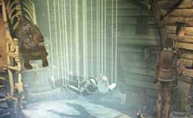
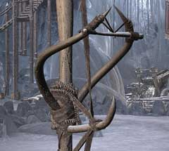

| 概要 | 地図 |
| 淡いヒント集 | ヒント集 | 的確なヒント集 |
| 攻略最短ルート |
| 場所選択に戻る |
ユコール族の村(前半)
洞窟の壁にある穴

・ネズミがいる。 ・穴の中に赤い実がある。 ・赤い実が欲しい場合は、どうすればよいか? ネズミが利用できそうだが。
祈祷師の家
 ・ハンスを助けるにはどうしたらよいか? ・祈祷師はハンスを助ける方法を知っているか? ・祈祷師の家には、あなたの役に立つものが置いてあるかもしれない。
木のオブジェ
 ・村のいたるところに点在している。 ・どのように使うものなのか? ・フクロウと関係はあるのか?
| << 前へ |
|
| 場所選択に戻る |
| 概要 | 地図 |
| 淡いヒント集 | ヒント集 | 的確なヒント集 |
| 攻略最短ルート |
Syberia II
| 目次へ戻る | ページの上部へ |